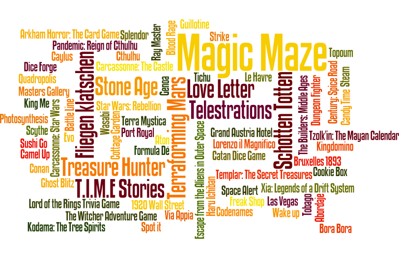

Tag: personal

Simon Phipps speaking about the Open Source Initiative (OSI) in FOSDEM 2018
After an uncertain landing a few hours ago (the airport in Madrid was barely working due to a snowy morning), I've just arrived home but instead of having some rest after an intense and though-provoking FOSDEM I felt the urge to start writing about my weekend in Brussels.

Un tag cloud con los juegos a los que jugué en 2017, el tamaño indica cantidad de partidas
Vuelvo al castellano, para dar continuidad a esta serie de análisis sobre las partidas que he jugado durante el año anterior.
As explained in the previous post, I've recently been in Normandy and Brittany with my friend Agatha. After publishing the first part of the trip: Normandy: a brief opinionated guide now I proceed to do the same with Brittany.
Some months ago I wrote in the blog about my road trip through the Romantikstraße in Austria. I shared the trip with Agatha and it went great, so we took advantage of the fact that we both had several pending holidays for this year and repeated the experience in two of the most beautiful regions in France: Normandy and Brittany. This post will be a summary of our experience in Normandy and hopefully I'll be able to write a similar one for Brittany.
Our last stage started in Obertraun and ended in Madrid. After a fabulous trip around Austria, we decided to spent our last morning in a quite different environment, visiting the Mauthausen memorial

Map status of the ING CTF competition with less than 22h left
Last week I had the huge pleasure to participate in a week-long Security Summer Camp organized by the Information Security department of ING Spain. The agenda was very promising and implied some theory and lots of practice, ending with an Escape the Room game and a 2,5 days long Capture The Flag competition. Several speakers from the Infosec Squad prepared talks and workshops about different topics, focusing on Ethical Hacking, secure development, server hardening or OSINT.
Our fourth stage started in Gästehaus Lauterbacher, a splendid guesthouse in Neumarkt am Wallersee. Quite off our route because we couldn't find anything affordable in Mondsee. We wanted a good place to rest after a hard day 3, and Lauterbacher was more than good. The place itself was nice and the owners were marvellous with us. I'll seriously consider returning to this place if I ever come back to the region.
And thus it began the most awaited stage.
After two days visiting splendid places with invaluable surprises, we finally decided to discard a short visit to Salzburg in order to spend more time on each stage of our trip. We wanted to take advantage of our rental car and Salzbug deserves to be visited more calmly (and you don't need a car to go there). For similar reasons, we also ruled out going to the Hohenwerfen Castle.
I think it was the right decision, because it allowed us to make the most of the remaining of our road trip.

views from the Mathemical Tower terrace in Kremsmünster Abbey
Source: My own pictures -
CC BY-NC-SA
For me, Kremsmünster Abbey was the most positive surprise of the entire trip. A priori it looked like yet another abbey, and our first hour there not only was confirming that suspicion but also made us feel somewhat deceived. We paid a considerable amount of money to find out that the ticket didn't include the visit of what we particularly wanted to see in there: The Tassilo Chalice, the Library and the Mathematical Tower. We could enter only the public areas and the inner gardens where they temporaly hosted a floral exhibition. The information was confusing, mostly in german only, and the variety of ticket options was the most complex that I've ever seen in a place like this.

Schallaburg Castle and garden
Source: My own pictures -
CC BY-NC-SA
A couple of weeks ago I had the immense pleasure of making a road trip through Austria following what they call the Romantikstraße, Romantic Road or Romantic Trail in English. Interestingly, ours was a singles trip initially planned for three friends but sadly in the end we were only two because at the last minute Roberto had to cancel. I shared this great adventure only with Agatha and it was great (as expected). I suppose that in the eyes of any innkeeper or bartender we were a happy couple celebrating something.

Un tag cloud con los juegos a los que jugué en 2016, el tamaño indica cantidad de partidas
Como cada arranque de año toca revisar los datos sobre las partidas que he jugado durante el año anterior (enlace a los datos de 2015, 2014, 2013, 2012 y 2011). Vuelvo a insistir en la comparación con los años anteriores, y mantendré el apartado de análisis y retrospectiva, que quizá sea la parte más interesante.
Our FOSDEM Sunday ended being much like the day before. A large majority of the talks I attended were in the Legal and Policy Issues track.
After an interesting Friday (as I told you yesterday) our FOSDEM Saturday started early. I attended a couple of talks in the Free Java DevRoom, another couple about Open Source Design but surprisingly most of them were in the Legal and Policy Issues track.
As you may know if you are reading this, FOSDEM is a not to be missed event about Free and Open Source Software (FOSS). By far, it is the most important gathering about FOSS in the planet. It's an unbeatable opportunity to attend great talks and workshops, but also to hang around with amazing people and top professionals.
Como cada arranque de año (aunque esta vez lo hago muy tarde) toca revisar los datos sobre las partidas que he jugado durante el año anterior (enlace a los datos de 2013, 2012 y 2011). Vuelvo a insistir en la comparación con los años anteriores, y este año como bonus trataré de reforzar el apartado de análisis y retrospectiva.
Llega el momento de la entrada que publico cada año con datos sobre las partidas que he jugado durante el año (enlace a los datos de 2012 y 2011). Siendo el tercer año, cada vez es más útil e interesante la comparación con los años anteriores.
El próximo Sábado 16 de Marzo vuelve Escépticos en el Pub Madrid, con un tema que esperamos genere un buen debate, con un sano e interesante intercambio de opiniones.
La charla será impartida por Almudena Martínez, humanista y sexóloga, y Montse Ibañez, matemática. Cuentan que se conocieron en un curso sobre sexualidad humana, y desde entonces vienen definiendo lo que consideran una visión novedosa sobre el erotismo y la sexualidad. Esto con el tiempo les llevó a fundar su propia consultora especializada en sexualidad: Cassire (@cassireworld)
Dentro de tres días, el próximo Miércoles 30 de Enero, estaré en Ginebra para una visita que llevo mucho tiempo planeando: la Organización Europea para la Investigación Nuclear que todos conocemos por sus siglas en francés CERN (Conseil Européen pour la Recherche Nucléaire).
Tras una introducción para despistados (muy despistados) entraré al propósito de esta entrada, una guía rápida y fácil para visitar el CERN, dado que es mucho más sencillo y asequible de lo que la gente cree.
Algunos recordaréis (y los que no, ya lo sabéis) que en Julio del pasado año tuve el placer de participar en la PiWeek (Personal Innovation Week), una iniciativa muy interesante por parte de Kaleidos (una empresa madrileña orientada al software libre con la que tengo únótimë lazos). Esta iniciativa consiste en permitir cada seis meses que durante una semana completa todos los empleados de la empresa organicen y participen en proyectos totalmente personales (suyos o de otro compañero).
Repito la entrada que publiqué hace ahora un año con datos sobre las partidas que jugué en 2011. Generó entre bastantes lectores comentarios y mucha curiosidad por algunos juegos. En esta ocasión puedo además comparar con los datos del año anterior, y no he podido resistir la tentación de crear una nueva nube ponderada de tags.
Se termina 2012. Consumo las últimas horas y creo que puedo decir que he agotado al máximo el año. Para lo bueno y para lo malo.
Programé esta entrada hace algo menos de una semana desde Madrid. En estos momentos estoy en un tren camino de Washington a Nueva York, probablemente leyendo o durmiendo, pero la magia de la informática me permite contaros qué tengo pensado hacer este próximo fin de semana. La excusa para este viaje de 10 días por los Estados Unidos es que tengo la intención de participar en la próxima NECSS 2012 (Northeast Conference on Science and Skepticism), que se celebra aquí en la Gran Manzana el 21 y 22 de Abril.
QED (Question-Explore-Discover) es un maravilloso evento organizado por Greater Manchester Skeptics Society y Merseyside Skeptics Society. Siendo un congreso barato (sobretodo para lo que es habitual en UK) suele terminar con beneficios gracias a la generosidad de los participantes y asistentes. Al igual que el año pasado, que reunieron más de 5 mil libras, todos los beneficios irán a parar a dos organizaciones benéficas: la National Autistic Society (para ayuda a gente con autismo y Asperger) y Sense About Science (proporciona medios y argumentos científicos para temas que puedan estar en el debate público).
Este año he jugado mucho y a muchos juegos, tantos que apenas en algunos he repetido más de 2-3 veces. Como catalogador obsesivo y compulsivo tengo las cifras más o menos exactas gracias a Board Game Geek y su fantástica aplicación para Android.
Recupero la no siempre valorada (y escasamente frecuente en mi caso) costumbre de hacer una crónica del unboxing de un pedido. En esta ocasión se trata de narrar los hechos acontecidos desde que se realizó el pedido en el pasado mes de Julio hasta hoy. Todos ustedes deberían conocer la tira cómica de XKCD, y si no es así pulsen Alt-F4 en este momento. No me detendré en ello.
BGG 2011 Secret Santa
Source: My own pictures -
CC BY-NC-SA
One of the main (and marvellous) things about BoardGameGeek (BGG) is its Community. The entire website is built upon them, thanks to them. That's why I'm part of it, I love it, help it grow, and cheerfully support it each year.
For those who doesn't know BGG yet, it is the biggest and most valuable games database and social network. There you'll find all the important info about a game enriched with all kinds of user contents, from hints, play guides, rule translations (if needed), photos, buy&sell info, recommendations, etc.
Como Tesorero de la Asociación Ludo (Asociación de Creadores de Juegos de Mesa), publico el siguiente manifiesto y con ello me sumo a esta iniciativa que pretende un mayor reconocimiento al trabajo de todos los creadores que participan en un juego de mesa
Esta próxima semana tendré el gusto, el honor y la responsabilidad de asistir al congreso El Ser Creativo, o Congreso de Mentes Brillantes como ellos mismos se llaman, que se celebrará en el Palacio de los Deportes de Madrid del 19 al 21 de Octubre
Aprovechando que acabo de realizar mi undécimo préstamo a través de Kiva vuelvo a hablaros un poco de este servicio. Hace ahora poco más de un año que os hablé de ello por primera vez, fue más o menos entonces cuando realicé mi primer préstamo a través de esta web. Luego han llegado 10 préstamos más, con los que llevo prestados exactamente 275 dólares (incluyendo todo lo que me han ido devolviendo) a gente que los necesita mucho más que yo.
En unas horas partiré hacia Alicante para uno de los eventos del año en España en cuanto a divulgación y escepticismo. El I Congreso Escéptico 2011 "Antes del fin del mundo" organizado por ARP Sociedad para el Avance del Pensamiento Crítico. Aparte del consabido networking (los corrillos de toda la vida), las principales charlas y actividades son las siguientes

TAM London 2010
Mañana, se puede decir que en cuestión de horas, salgo hacia Londres. Por tercera vez en menos de dos años aunque esta vez no es por motivos turísticos.
El motivo de este viaje es asistir a la TAM London 2010, un evento único y muy especial. TAM viene de ‘The Amaz!ng Meeting’, unas jornadas de eventos y conferencias organizadas por la JREF (James Randi Educational Foundation) habitualmente en Las Vegas aunque desde 2009 se vienen desdoblando aquí en Europa, en Londres hasta ahora.
Esta misma mañana he tenido ocasión de participar en el World Bike Tour Madrid 2010, un multitudinario paseo en bicicleta por el centro de la ciudad que se celebra por tercer año aquí en Madrid. La organización corre a cargo de Sportis (una compañía portuguesa dedicada a eventos deportivos) con la ayuda en su edición madrileña del Ayuntamiento de Madrid y el Ministerio de Salud y Política Social. Dado el origen luso, este evento se celebra también en Lisboa, Oporto y São Paulo.

Kiva logo
Encontré la web de Kiva hace unos meses. En aquel momento me interesó mucho pero no me decidí y el tiempo y mi memoria enterraron la idea. Esta vez no podía pasar lo mismo.
Ya tenemos la convocatoria oficial para el próximo Escépticos en el Pub Madrid, que se celebrará el Sábado 29 de Mayo de 2010
Hoy, a eso de las 19:00, ha estado a punto de caerme un camión encima. Literal. Seré breve.
La pedí hace más o menos una semana y hoy ya la tengo en mis manos.
Hace unas horas que llegué de mi viaje por Barcelona. Tras darme un reconstituyente baño caliente, ponerme al día con el correo y ojear todos vuestros blogs, escribo un pequeño post de agradecimiento para que sepáis que llegué bien.
Brevemente, que salgo de viaje a Barcelona en 10 minutos.
Hoy, 7 de Octubre de 2005, ¡¡Luiyología cumple dos años!!!
Si consigo escaparme del trabajo mañana iniciaré mi peregrinación habitual por estas fechas a mi segunda patria en tierras asturianas.
El Viernes pase el día en Toledo. Volví a pasear por sus calles, siempre rodeado de esa enorme cantidad de acero. Es impresionante.
Siempre me han encantado las motos. Diría mejor el motociclismo, pues apenas he conducido un par de veces una moto pequeñita.
Este fin de semana he cumplido varios de mis deseos, disfrutar de un fabuloso fin de semana en Jerez, hacerlo durante un Gran Premio de Motociclismo, ver Sevilla, conocer más el Sur y encontrar gente estupenda.
Hoy ha llegado la tercera parte de los Reyes, y la espera ha merecido la pena.
Mi hermano y su novia me han regalado la fantástica edición de Harper Collins del "The Annotated Hobbit", el genial libro de J.R.R. Tolkien. Esta vez revisado, expandido y anotado por Douglas A. Anderson
Viendo a Cek publicar su Geek Code me ha recordado el mío, y paso a actualizarlo
Depués de pasar ayer algunas molestias, me he levantado con el ojo ardiendo y muy rojo. Me he observado varias veces, acordándome de una mala experiencia anterior, y he tenido que ir a Urgencias cuando he visto una 'mancha' en la córnea


{kind=link}
{kind=link}
{kind=link}